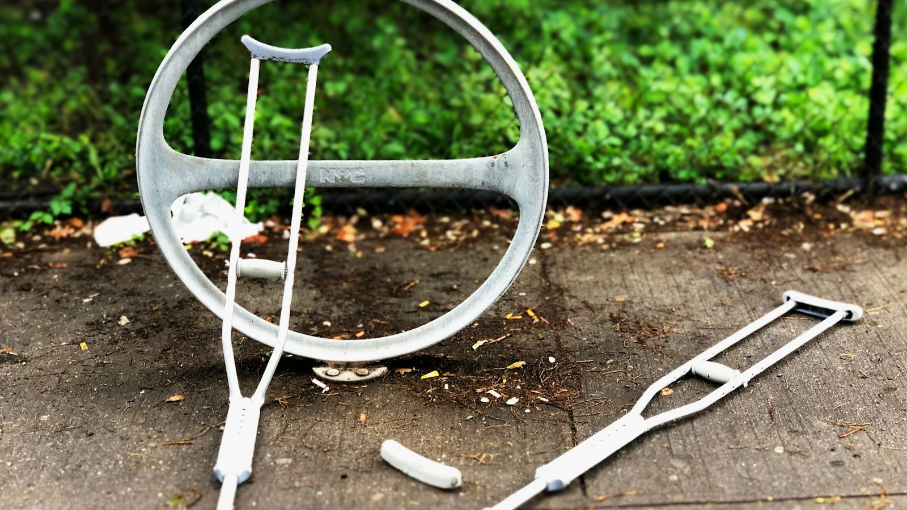
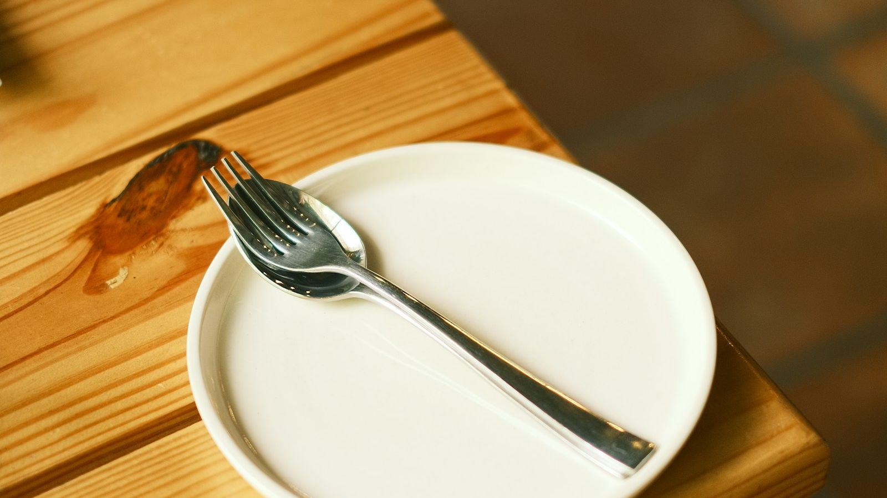
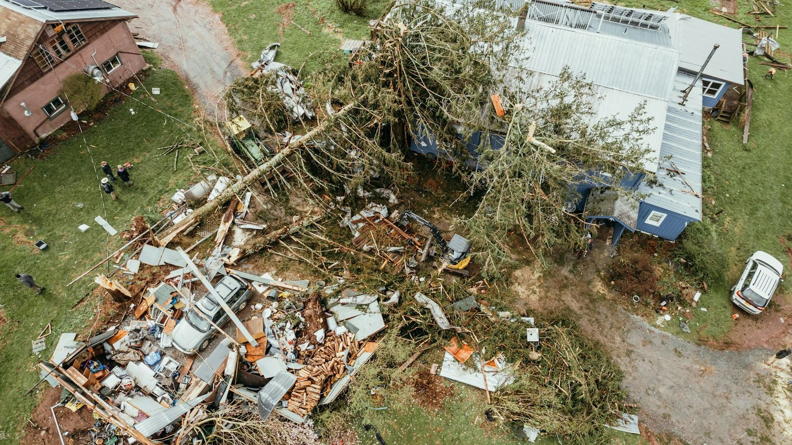
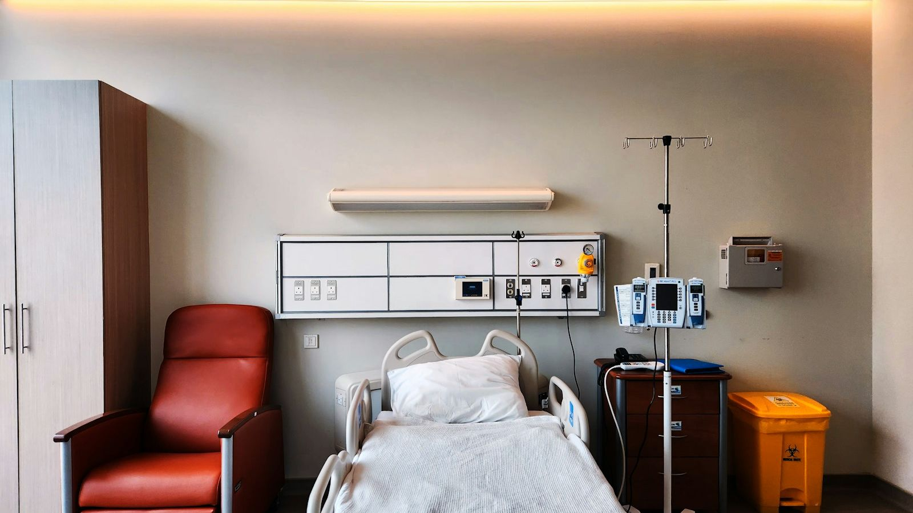
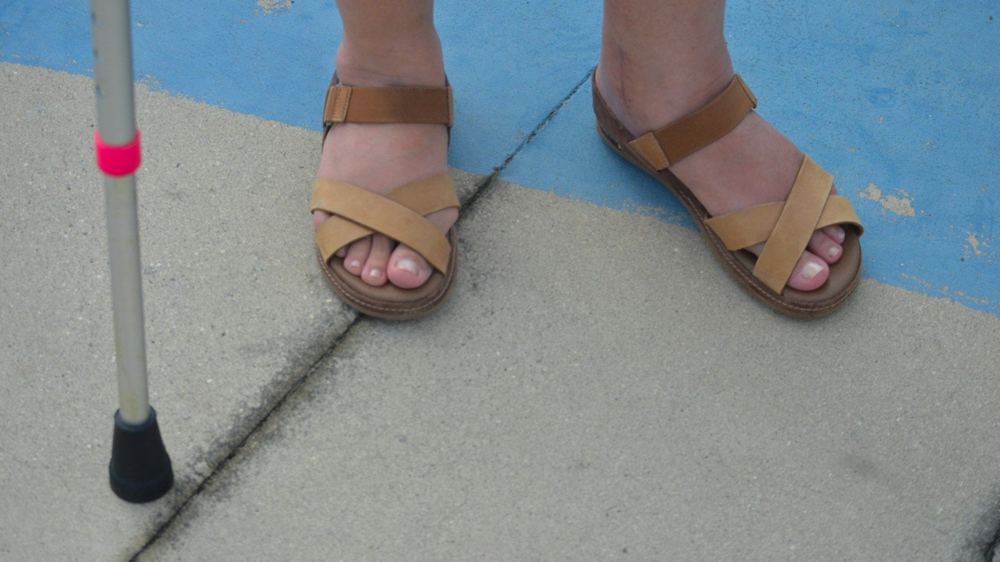
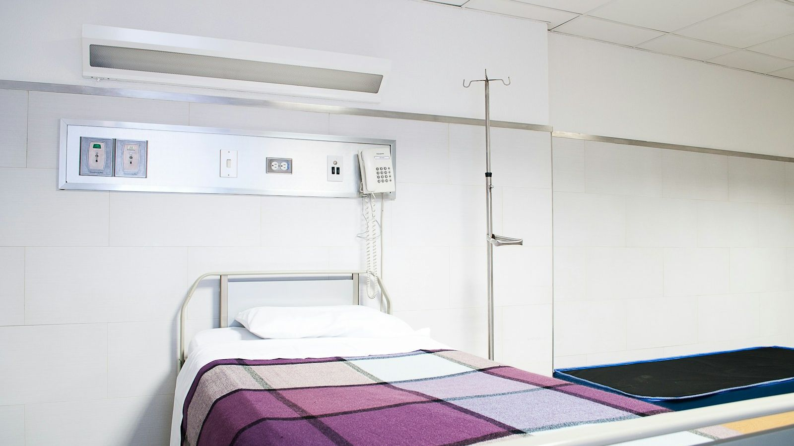

選擇你想支持的案件。每個案件上架前都已完成審核與身分驗證。捐款是直接匯款給發起人，平台不會經手這筆款項。
共 128 件進行中案件
12 歲確診急性淋巴性白血病，已完成兩次化療，接下來需要骨髓移植。

從鷹架摔落導致腰椎骨折，手術後需要半年以上的復健，暫時無法工作。

工廠無預警歇業，獨力扶養三個孩子，房租與生活費頓時沒有著落。

獨居的王奶奶老家在颱風中屋頂被掀、牆面倒塌，急需修繕才能住回去。

乳癌第三期，健保給付之外的標靶藥物每月需自費數萬元。
周爸爸上班途中突發心肌梗塞離世，家人需要協助支付喪葬費用。

下課途中遭車輛撞擊，腿部多處骨折，需要長期復健與看護。
家中唯一收入來源的爸爸中風住院，醫療費與生活開銷都需要協助。

洗腎三年終於等到配對，換腎手術與術後照護需要一筆費用。
可以換個縣市看看，或回到全部縣市。